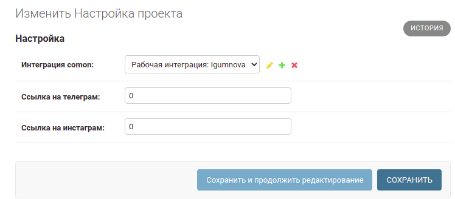
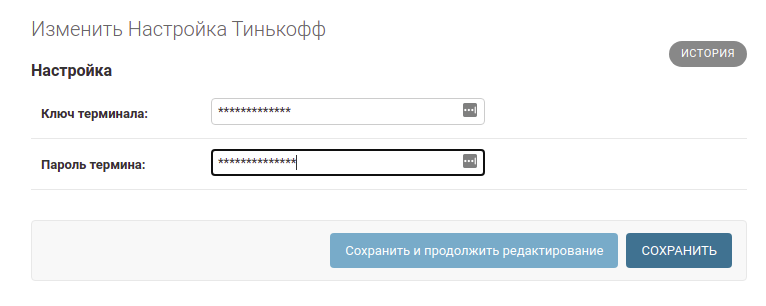

Предварительная настройка¶
Note
Для корректной работы системы небходимо провести следующиe настройки из административной панели, используя привелигированную учетную запись
Настройка интеграции с comon.ru¶
Добавляем учетные данные¶
Переходим в раздел Comon-интеграции. В случае если нет уже существующей интеграции - создаем новую, нажав Добавить.
Заполняем поля Логин и Пароль от кабинета comon и жмем Сохранить
Caution
По умолчанию интеграция не пригодна к использованию. Необхожимо подтвердить ее работоспособность
Жмем кнопку - Подтвердить работоспособность. Пройзойдет установка соединения с comon и если учетные данные верны - у записи появится зеленый чекбокс.
Добавляем интеграцию в основную настройку проекта¶
Поскольку интеграций с comon может быть множество, нужно явно указать в настройке проекта какую именно использовать. Переходим в Главную настройку проекта
Выбираем из выпадающего списка поля Интеграция comon созданную выше интеграцию. Жмем Сохранить
Настройка платежного терминала tinkoff¶
Переходим в раздел Интеграция Тинькофф
Вводим ключ и пароль терминала, полученные в ЛК банка. Сохраняем
Настройка ссылок на соц. сети¶
Для перехода пользователя с фронта на соц. сети (множество иконок телеграм и инсты), прописываем нужные адреса в Главной настройке проекта
Note
Эта настройка влияет только на переадресацию. Но не на остальную логику работу с телеграмом